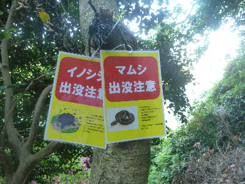
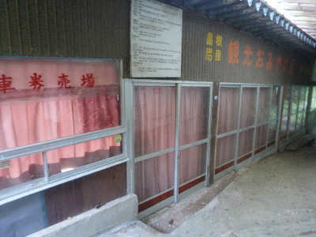
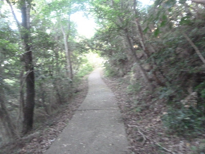
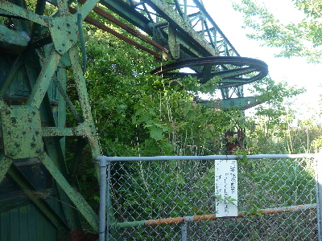
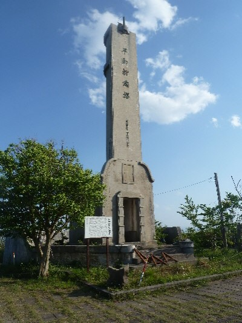
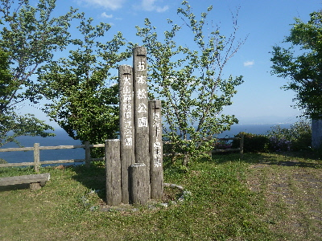
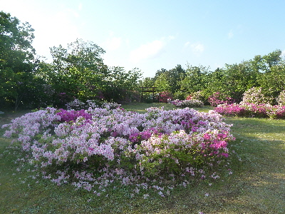
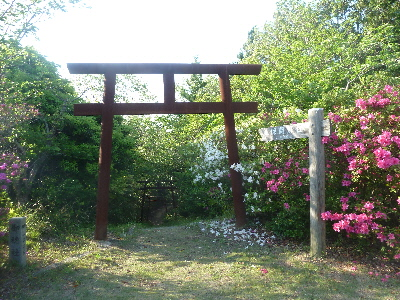
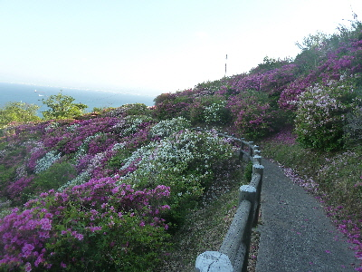
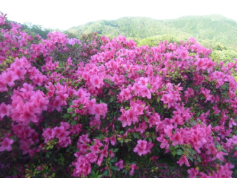

五本松公園は朝がお勧めです。
2018/05/03
五本松公園に登山です。

怖い看板がありました。注意しましょう。

以前はリフトがあったようです。
今は営業していないので自力で歩きましょう。

舗装してあるので歩きやすいです。
でもリフトで上がるくらいの距離なので、体の弱い人は注意しましょう。

リフト降り場だった所です。
だいぶ朽ちてますね。
昔は人がいっぱい乗っていたんだろうなー。

五本松公園の山頂には平和祈念塔がありましたが、こちらも荒廃した感じでした。
近くには寄れないですね。
この状況を沢山の人が知っていると思うんですが、何もないんでしょうね。平和がないがしろにされる時代なんだなー。
【追記】
平和祈念塔は、元々美保関事件（海軍の演習中の事故）ための慰霊塔だったそうです。
ネットで検索したら、現在亡くなった方は美保神社に合祀されているって内容のものがありました。
こうゆうのは壊さないでこのままあった方がいいですね。古くなったら古くなったままで歴史を感じさせる外観でいて欲しいです。
倒壊の恐れがあったら、ぐるっと立ち入り禁止にして安全に保管して欲しいと思いました。

山頂はいい眺めでした。

ツツジもある綺麗な公園です。

山頂の隅っこに鳥居がありました。
ここから美保神社や美保関灯台に歩いていけるようです。
今度機会があったら歩いてみたいです。

ここがメインのツツジ公園です。
山の斜面の東側なので、西日の時間は日陰になっていました。
一面のツツジがあるのはいいんですが、日陰は残念ですね。
午前中に来ないと駄目ですね。

日があたっていたらもっと綺麗なのにな。
色々ありましたが、綺麗な景色をみながらいい運動ができました。
軽いハイキングに丁度いいかな。